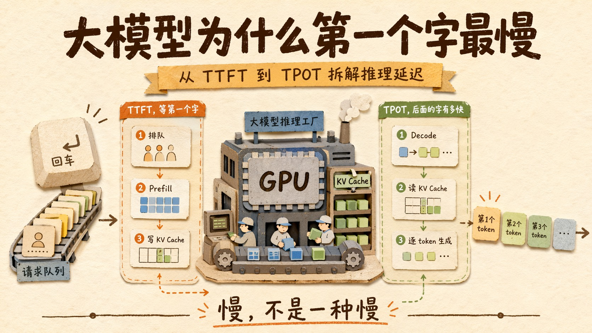
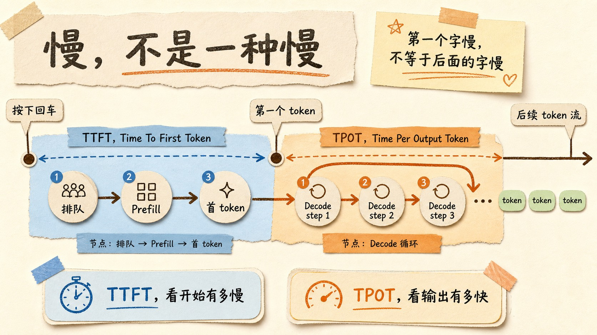
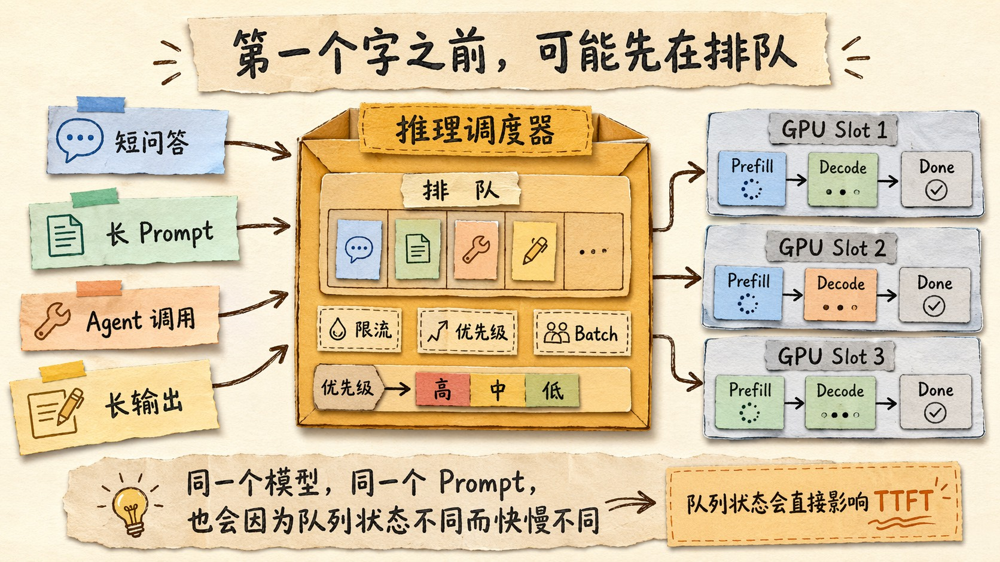
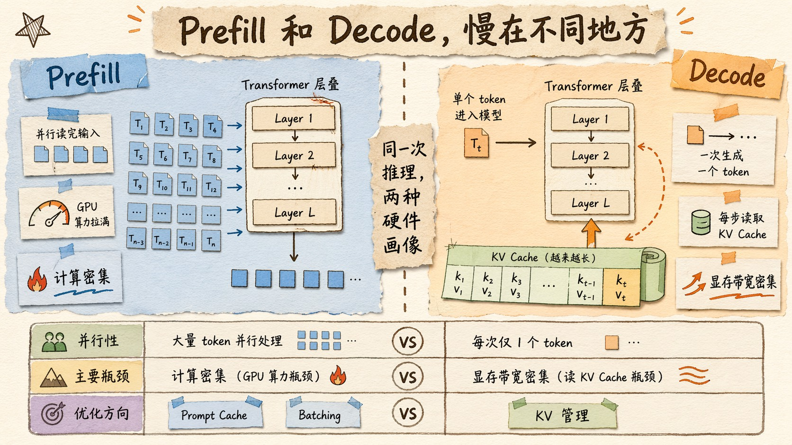
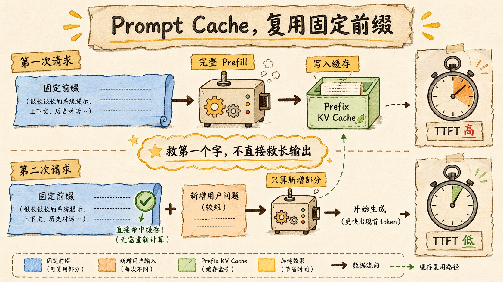
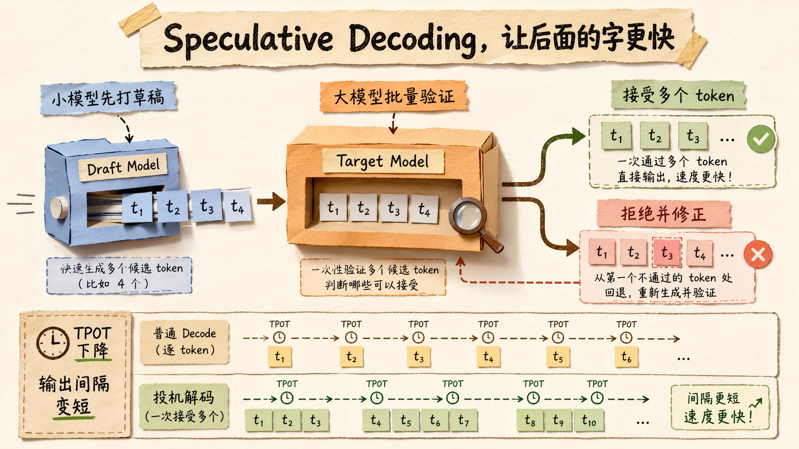
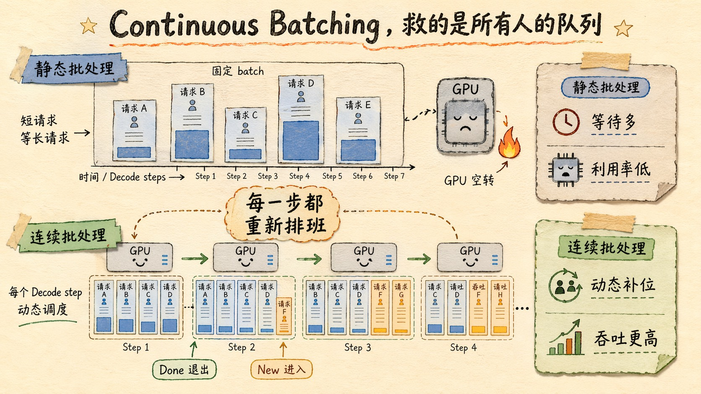
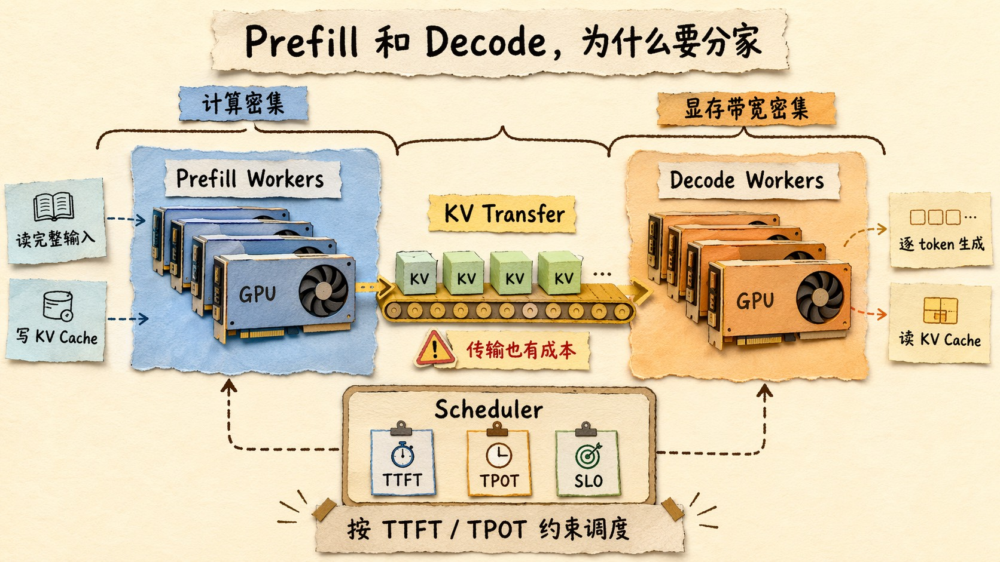

大模型为什么第一个字最慢？从 TTFT 到 TPOT 拆解推理延迟
如果你经常用 ChatGPT、Claude、Gemini，或者自己写过一点 Agent，你一定遇到过一个很微妙的瞬间。
你按下回车。
屏幕安静了几秒。
然后第一个字终于蹦出来。
最奇怪的是，一旦第一个字出来，后面又好像顺了很多。模型开始一行一行往外吐，虽然偶尔也会卡，但那种「等第一个字」的感觉，和后面「字一个个出来」的感觉，明显不是一回事。
以前我也只是粗暴地把它理解成，模型在想。
但后来越做 Agent，越觉得这个说法太偷懒了。
模型不是人在憋一句话。它没有坐在那里皱眉头，也没有在脑子里组织语言。你看到的这段等待，其实是一次推理系统在排队、预填充、写 KV Cache、调度 batch、采样第一个 token。
也就是一整套工程系统在跑。
这里面有两个指标特别关键，一个叫 TTFT，一个叫 TPOT。
TTFT 是 Time To First Token，从你发出请求，到收到第一个生成 token 的时间。
TPOT 是 Time Per Output Token，生成开始之后，每个输出 token 平均要花多久。
这两个东西听起来像监控面板里的冷冰冰指标，但其实你每天都在体感它们。
第一个字等得久，是 TTFT 高。
后面一个字一个字蹦得慢，是 TPOT 高。
很多人做大模型应用的时候，只会说一句，响应慢。
但慢这件事，不能这么粗。
你得先问清楚，到底是第一个字慢，还是后面的字慢。
这两个问题，背后是两套完全不同的瓶颈。

慢，不是一种慢
我自己最早真正意识到这件事，是在做一个 Agent 后端的时候。
那个 Agent 的 System Prompt 很长，里面塞了角色说明、工具定义、行为约束、一些 Few-shot，大概 1 万多个 token。用户每问一句，前面那坨东西都要跟着一起发过去。
体感就很明显。
第一下等得很久。
但等它开始输出以后，速度其实还行。尤其是短回答，可能第一个字前面等了 2 秒，后面 300 字很快就出来了。
这时候你如果只看总耗时，会得出一个很模糊的结论，模型慢。
但其实不是。
它慢在第一个字。
再换一个场景。你让模型写一篇长文，System Prompt 不长，用户输入也不长，但你让它输出 5000 字。
这时候第一个字可能很快出来，但后面会明显感觉输出速度跟不上。你盯着屏幕，看它一小段一小段往外挤。
这不是 TTFT 的问题。
这是 TPOT 的问题。
所以大模型推理延迟，至少要拆成两段看。
第一段，发请求到第一个 token 出来。
第二段，第一个 token 出来以后，后续 token 一个个生成。
你想想看，这件事和视频播放其实有点像。
打开一个视频，前面那个转圈加载，是首帧延迟。播放过程中如果一卡一卡，那是播放吞吐不够。
没人会把这两个问题混在一起优化。
大模型也是一样。

第一个字之前，模型在干什么
先说 TTFT。
从你按下回车，到第一个字出来，中间大概会经过几件事。
请求先到服务商的网关，做鉴权、限流、路由。然后进入推理调度器，等待被塞进某个 GPU 批次。接着做 Tokenize，把文本切成 token。然后进入 Prefill，把所有输入 token 一次性过一遍 Transformer，生成每一层的 KV Cache。再由模型算出第一个输出 token 的 logits，采样，Detokenize，流式回传。
这里面真正的大头，通常是两块。
一块是排队。
一块是 Prefill。
排队这件事很好理解。你不是一个人在用模型。服务商后面可能同时有几万、几十万请求在排队。推理引擎要把这些请求动态塞进 GPU，既不能让 GPU 空着，也不能让单个请求等太久。
这就是为什么同一个模型，同一个 prompt，有时候快，有时候慢。
不是模型突然变聪明或者变笨了。
是你撞上的队列状态不一样。

Prefill 就更关键了。
你发给模型的所有输入 token，在第一个输出 token 出来之前，都要先过一遍模型。System Prompt、历史对话、工具列表、RAG 检索出来的文档，全部都算输入。
这就是为什么长 Prompt 会显著拖慢第一个字。
因为模型必须先读完题目，才能开始答题。
这里的「读完」，不是人类意义上的扫一眼，而是每个 token 都要经过几十层 Transformer，每一层都要算 attention 和 FFN，还要把每个 token 的 K 和 V 写进 KV Cache。
你上一篇如果看过 KV Cache 那篇，就知道这东西不是抽象概念。它是实实在在占显存的张量。
所以第一个字之前，推理系统干的活很重。
它要把你的整个上下文，变成后续生成可以复用的内部状态。
这就是 Prefill。
这也是 TTFT 的核心。
为什么后面的字又是另一种慢
第一个字出来以后，事情进入 Decode 阶段。
Decode 的逻辑很反直觉。
模型每次只生成一个 token。
生成第一个 token 后，把它拼回上下文。然后用这个 token 再生成下一个 token。再拼回去。再生成下一个。
就这么一个一个来。
它不是一次性把整篇文章想好，然后批量吐出来。
这也是为什么流式输出能成立。因为模型真的就是一边算，一边吐。
但问题也在这里。
每生成一个新 token，模型都要拿当前 token 的 Query，去和历史所有 token 的 Key、Value 做 attention。历史越长，要读的 KV Cache 越多。并发请求越多，要管理的 KV Cache 也越多。
Decode 阶段最麻烦的地方，不是算不过来，而是搬数据太多。
GPU 的算力很强，但 Decode 每一步只算一个 token，矩阵规模没有 Prefill 那么大，很难把算力完全喂饱。与此同时，它还要不断从显存里读历史 KV Cache。
所以 Prefill 更像是计算密集。
Decode 更像是显存带宽密集。
这句话挺重要。
因为它解释了一个很常见的错觉。
很多人以为，换更强的 GPU，输出速度就一定线性变快。
不一定。
如果瓶颈在显存带宽和 KV Cache 读取，单纯堆 FLOPS 没那么有用。你需要的是更好的 KV Cache 管理，更高效的 attention kernel，更合理的 batching，甚至是 KV Cache 压缩。
这也是为什么大模型推理系统越来越像一个操作系统。
它不只是「跑模型」。
它是在管理显存、调度请求、复用缓存、平衡吞吐和延迟。

Prompt Cache 救的是第一个字
讲到这里，就能理解 Prompt Cache 到底在优化什么了。
很多 Agent 系统有一个共同特点，固定前缀特别长。
System Prompt 是固定的。工具 Schema 是固定的。行为规范是固定的。甚至一些 Few-shot 示例也是固定的。
如果每次请求都把这些固定内容重新 Prefill 一遍，那就太浪费了。
Prompt Cache 的思路很简单。
既然固定前缀一样，那它对应的中间状态也一样。下次再遇到同样的前缀，就直接复用，跳过这部分 Prefill。
Anthropic 的 Prompt Caching 是显式控制，你可以在请求里标记缓存断点。它的文档里写得很清楚，缓存适合大量背景资料、重复任务、长多轮对话这类场景，默认缓存生命周期是 5 分钟，也支持更长缓存。
OpenAI 的 Prompt Caching 更偏自动化，固定长前缀命中后，会在计费里体现 cached tokens。
开源推理引擎里，vLLM 有 prefix caching，SGLang 有 RadixAttention 这类前缀复用机制。
这些东西名字不完全一样，但它们解决的是同一个问题。
减少重复 Prefill。
也就是降低 TTFT。
我自己做 Agent 的体感也很明显。一个 1 万 token 左右的固定系统提示词，如果每次都重新 Prefill，第一个字就会肉眼可见地慢。缓存命中以后，TTFT 会直接掉一截。
但这块也有一个坑。
Prompt Cache 主要救第一个字，不直接解决长回答输出慢的问题。
因为长回答的慢，发生在 Decode。
你让模型输出 5000 字，Prompt Cache 只能帮你更快开始写，不能让它后面每个 token 都免费蹦出来。
所以如果你的应用是短问答，Prompt Cache 体感收益会特别强。
如果你的应用是长文生成，Prompt Cache 只能改善开头，后面还得看 Decode 吞吐。
这就是为什么我一直觉得，做 Agent 延迟优化，不能只盯一个总耗时。
总耗时这个指标太粗了。
你要把 TTFT 和 TPOT 拆开看。

Speculative Decoding 救的是后面的字
那 TPOT 怎么优化？
一个很重要的方向叫 Speculative Decoding，投机解码。
这个名字听起来很学术，但思路其实很像 CPU 的分支预测。
既然大模型每次只能生成一个 token，很慢，那能不能找一个小模型先帮它猜后面几个 token？
具体过程大概是这样。
小模型先快速草拟几个 token。
大模型一次性验证这些 token 是否合理。
如果验证通过，就一次接受多个 token。
如果不通过，就回退到大模型自己的结果。
比较骚的地方在于，好的投机解码可以在不改变最终分布的前提下加速。也就是说，它不是让模型变傻来换速度，而是让大模型少做一些重复的单步 Decode。
你可以把它理解成，一个实习生先写草稿，资深编辑批量审稿。
如果实习生写得靠谱，编辑一口气通过好几句。
如果写歪了，编辑马上改回来。
这对 TPOT 很有用，因为它试图打破「一次只出一个 token」这个自回归瓶颈。
当然，它也不是免费午餐。
小模型得足够快，也得和大模型足够接近。不然草稿经常被拒绝，大模型还要花时间验证，收益就没了。
这也是为什么不同模型、不同任务、不同输出长度下，投机解码收益差异很大。
代码生成、格式稳定、长输出场景，通常更容易吃到收益。
开放式聊天、强推理、输出不确定性很高的场景，收益可能没那么稳定。
DeepSeek V3 里面的 MTP，多 token prediction，也可以放到这个脉络里看。它让模型训练时就学习预测未来多个 token，推理时也能服务于更高效的生成。
回到主线。
Prompt Cache 是让模型更快开始。
Speculative Decoding 是让模型更快继续。
一个主要打 TTFT。
一个主要打 TPOT。
这俩经常被混在一起聊，但优化的位置完全不一样。

Continuous Batching，救的是所有人的队列
如果只服务一个用户，推理系统会简单很多。
但真实世界不是这样。
一个推理服务同时面对大量请求。有的人 prompt 很短，只问一句天气。有的人塞了 10 万 token 的文档。有的人只要一句话。有的人要生成 3000 字。有的人生成到一半就被 EOS 停了。
这些请求长度不同、到达时间不同、输出长度也不同。
如果用传统批处理，等一批请求凑齐，一起跑，等这一批全部结束，再跑下一批，GPU 会被浪费得很惨。
因为短请求要等长请求。
长请求又会拖住新请求。
于是现代推理引擎基本都会做 Continuous Batching，连续批处理。
它不是按请求批处理，而是按 Decode step 动态调度。
每一轮生成结束后，已经完成的请求立刻退出，新来的请求立刻补进来。GPU 尽量保持忙碌，请求也不用等一个完整 batch 结束。

这件事对 TTFT 和 TPOT 都有影响。
对 TTFT，它减少排队等待。
对 TPOT，它提高整体吞吐，让每个 Decode step 能塞进更多并发 token。
但它也带来一个很麻烦的调度问题。
如果你为了吞吐，把 batch 塞得太满，单个请求的延迟可能变差。
如果你为了低延迟，把 batch 控得太小，GPU 利用率又会掉。
这就是在线推理系统最经典的矛盾。
用户想要低延迟。
平台想要高吞吐。
GPU 想要被喂饱。
三方都很合理。
但不能同时无限满足。
所以推理引擎的调度策略，说到底是在做取舍。
SGLang 的文档里甚至会直接让你看 token usage、queue req、KV cache pool 这些指标。token usage 太低，说明 KV Cache 利用不够；太高，又可能出现 KV cache pool 满了，需要 retract 请求。
你看，这已经很像操作系统里的内存调度了。
不是玄学。
是资源管理。
Prefill 和 Decode 为什么要分家
讲到这里，还有一个更进一步的优化，叫 Prefill-Decode Disaggregation。
也就是 Prefill 和 Decode 分离。
这玩意第一次听起来有点过度工程。
不就是一次推理吗，干嘛还要拆两拨 GPU？
但你顺着前面的逻辑想，就会发现它其实很自然。
Prefill 是计算密集，适合大批量并行，把 GPU 算力打满。
Decode 是显存带宽密集，每一步只生成一个 token，更吃 KV Cache 读取和调度。
这两个阶段的硬件画像不一样。
把它们混在同一组 GPU 上，就会互相干扰。
一个长 Prompt 的 Prefill 进来，可能把 Decode 请求卡住。Decode 请求一多，又可能让 Prefill 的大矩阵计算吃不到理想 batch。
DistServe 这类系统的核心观点就是，把 Prefill 和 Decode 放到不同 GPU 池里。Prefill 节点专心读输入、写 KV Cache；Decode 节点专心生成后续 token。论文里把目标说得很直白，它不是单纯追求最高吞吐，而是在 TTFT 和 TPOT 的延迟约束下，提高能服务的请求量。
当然，分家也有代价。
Prefill 算完的 KV Cache，要传给 Decode 节点。
这就引入了网络和跨节点传输成本。如果机器之间带宽不够，KV Cache 搬过去的时间，可能把收益吃掉。
所以 PD 分离不是永远更好。
后来的研究也在讨论，什么时候应该聚合，什么时候应该分离，什么时候用混合模式。
这也挺有意思。
以前大家讨论大模型，喜欢问模型参数多少、Benchmark 多少分。
现在真正做线上服务的人，会问另一组问题。
你的 TTFT SLO 是多少？
你的 TPOT SLO 是多少？
你的 prompt 长度分布是什么？
你的输出长度分布是什么？
你的 KV Cache 怎么迁移？
你的 prefix cache 命中率是多少？
这才是推理服务真正的工程语言。

做应用的人，到底该看什么
如果你只是调 API，不自己部署模型，那这些东西是不是没用？
我觉得不是。
甚至恰恰相反。
越是调 API，越要理解这些指标。因为你控制不了服务商的 GPU，但你能控制自己的请求形态。
第一个建议，拆指标。
不要只记录 total latency。至少记录 TTFT、总输出 token 数、总耗时，然后算一个粗略的输出速度。
流式接口里，第一个 chunk 到达时间就是 TTFT。最后一个 chunk 到达时间减去第一个 chunk，再除以输出 token 数，大概就是 TPOT。
不用一开始就搞得特别精确。
先拆开，比不拆强很多。
第二个建议，固定前缀放前面，动态内容放后面。
如果你用 Prompt Cache，前缀稳定性非常重要。System Prompt、工具定义、通用规则尽量保持稳定。用户问题、工具结果、RAG 文档这些动态内容放后面。
不要每次请求都在前缀里塞时间戳、随机 ID、临时状态。
你这么一搞，缓存就碎了。
第三个建议，少塞无用上下文。
很多 Agent 慢，不是模型慢，是你给它喂了太多垃圾上下文。
工具列表 80 个，真正用到 3 个。历史对话塞满 20 轮，其实只相关最近 2 轮。RAG 检索一口气塞 15 段文档，里面一半没用。
这些东西都会变成 Prefill 成本。
它们都会拖慢第一个字。
第四个建议，长输出任务要换思路。
如果你要生成长文、代码、报告，Prompt Cache 只能救开头。真正影响体验的是后续 Decode。这个时候可以考虑分段生成、结构化生成、先出大纲再扩写，或者用更适合长输出吞吐的模型。
有时候，用户不是真的需要模型一次性吐完 5000 字。
用户需要的是先看到结构，知道它没跑偏。
这就是产品设计能介入的地方。
第五个建议，别把流式输出当性能优化的万能药。
流式输出改善的是体感，不一定改善总耗时。
它让用户更早看到第一个字，所以焦虑下降。但如果 TPOT 很高，后面还是会慢。如果 TTFT 本来就很高，流式也救不了第一个字之前那段沉默。
这也是为什么很多产品看起来在流式输出，但你还是觉得慢。
因为真正卡住的地方，不在流式。
而在 Prefill、排队和 Decode。
写在最后
回到最开始那个瞬间。
你按下回车，屏幕安静了几秒。
以前我们会说，模型在思考。
现在你再看，就会知道，那几秒里其实发生了很多非常具体的事。
请求在排队，调度器在找 GPU，Tokenizer 在切 token，Prefill 在把整段上下文灌进模型，KV Cache 在一层层写入显存，采样器在挑第一个 token。
第一个字出来之后，另一个循环才刚刚开始。
Decode 一步一步往前走，每一步都读取历史 KV，每一步都采样一个新 token，每一步都在显存带宽、batch 调度和输出速度之间做权衡。
这不是一句「模型慢」能概括的。
它更像一座小型工厂。
第一个字之前，是备料、排产、开机。
第一个字之后，是流水线开始运转。
你要优化它，就不能只站在门口喊快点。
你得知道到底是哪一段慢。
说实话，我现在越来越觉得，未来做 AI 应用的人，会被迫学会一部分推理系统知识。
不是因为每个人都要去写 CUDA，也不是因为每个人都要自己部署 vLLM。
而是因为 Agent、长上下文、工具调用、多轮任务这些东西，会把底层推理系统的成本和延迟，直接暴露到产品体验里。
你不理解 TTFT，就会乱塞 Prompt。
你不理解 TPOT，就会误判长输出体验。
你不理解 Prompt Cache，就会把固定前缀写得天天变。
你不理解 Decode，就会以为流式输出能解决一切。
大模型不是一个魔法黑盒。
至少，不该永远是。
能多理解一层，我们就少一点玄学，多一点判断。
以上，既然看到这里了，如果觉得不错，随手点个赞、在看、转发三连吧，如果想第一时间收到推送，也可以给我个星标⭐~
谢谢你看我的文章，我们，下次再见。
/ 参考资料
DistServe: Disaggregating Prefill and Decoding for Goodput-optimized Large Language Model Serving, 2024
Prompt Cache: Modular Attention Reuse for Low-Latency Inference, 2023
Don’t Break the Cache: An Evaluation of Prompt Caching for Long-Horizon Agentic Tasks, 2026
vLLM 文档，Prefix Caching、Chunked Prefill、Continuous Batching
SGLang 文档，Hyperparameter Tuning、PD Disaggregation、RadixAttention
Anthropic Prompt Caching Documentation
Speculative Decoding, Leviathan et al. / DeepMind, 2023